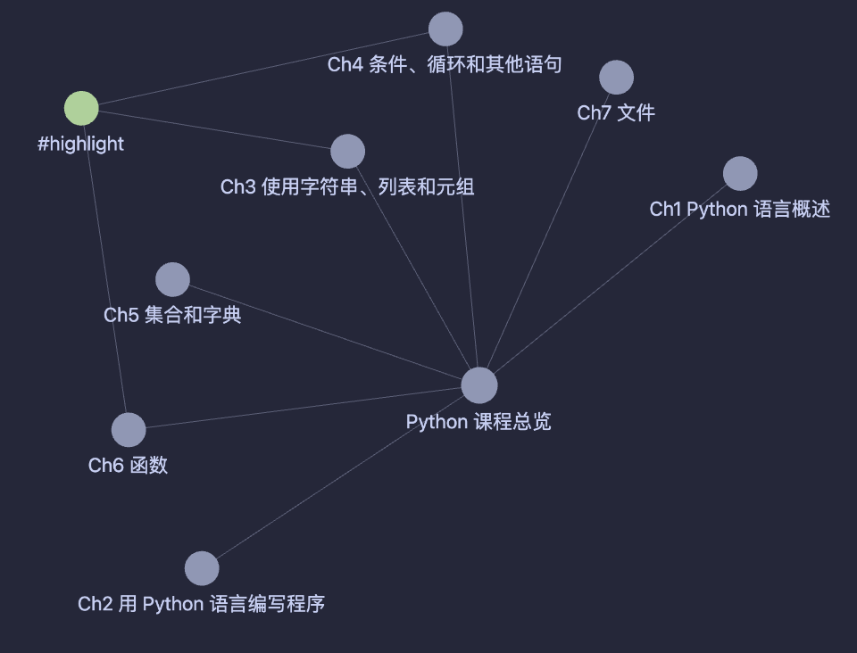
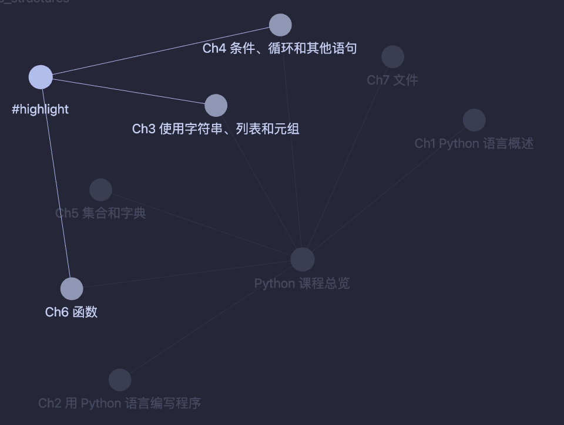
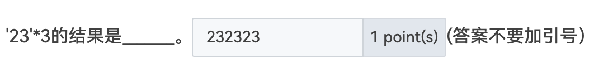

<!DOCTYPE html>
<html lang="en">
  <head>
    <meta charset="utf-8" />
    <meta name="viewport" content="width=device-width, initial-scale=1.0, maximum-scale=1.0, user-scalable=no" />

    <title>Python 学习分享</title>
    <link rel="shortcut icon" href="./favicon.ico" />
    <link rel="stylesheet" href="./dist/reset.css" />
    <link rel="stylesheet" href="./dist/reveal.css" />
    <link rel="stylesheet" href="./dist/theme/simple.css" id="theme" />
    <link rel="stylesheet" href="./css/highlight/github.css" />

    <link rel="stylesheet" href="./assets/custom.css" />

  </head>
  <body>
    <div class="reveal">
      <div class="slides"><section ><section data-markdown><script type="text/template">


<div class="middle center" style="position: relative;">
  <div style="position: absolute; top: 0; right: 0; transform: translate(-10%, -10%);">
    
  </div>
  <div style="width: 90%; display: inline-block; vertical-align: top; transform: translate(8%, 10%);">
    <h1>郁林学习分享会</h1>
    <hr>
    <p>Python 学科学习和考试经验分享</p>
    <p>By <a href="https://github.com/cxzhou35">@Zicx</a></p>
    <div style="text-align: right; margin-top: 1em;">
      <p>2023.6.2</p>
      <p>Powered by <a href="https://github.com/webpro/reveal-md">@reveal-md</p>
    </div>
  </div>
</div>

</script></section><section data-markdown><script type="text/template">

## Table of Contents

本次分享会我会分享我学习Python的经验，以及如何高效备考

<div class="fragment">

1. Python 知识点梳理

</div>

<div class="fragment">

2. 考试重点标注

</div>

<div class="fragment">

3. 复习备考建议

</div>

<div class="fragment">

4. 考试经验分享

</div>

<div class="fragment">

5. Q&A

</div>

<div class="fragment">

Misc

- 分享会课件: [Slides link 🔗](https://zicx.top/Reveal-md/zju_python_share/site/slides/#)
- Zicx 的联系方式: [Email 📧](mailto:zjajzcx3566@gmail.com)
- 上机测试题: [File link 🔗](https://github.com/cxzhou35/Reveal-md/blob/main/zju_python_share/slides/src/docs/python_test_exercises.pdf)

</div>

</script></section><section data-markdown><script type="text/template">

## Take Aways

<div class="fragment">

以下内容不是本次的重点

- 具体的题目讲解 ❌
- 解题代码怎么写 ❌
- 押题 ❌

</div>

<div class="fragment">

值得关注的是这些内容

- 如何有针对性地复习 ✔️
- 如何高效地提高代码能力 ✔️
- 如何调整做题心态 ✔️

</div>

</script></section></section><section ><section data-markdown><script type="text/template">

<div class="middle center">
<div style="width: 100%">

# Part.1 Python 知识点梳理

</div>
</div>

</script></section><section data-markdown><script type="text/template">

## Python 章节知识点梳理

第 1 章 Python 语言概述

- 程序设计语言
    - 机器语言（由二进制 0、1 代码指令构成）
    - 汇编语言（汇编程序 → 机器语言表示文件）
    - 高级语言（C、Java、Python）
- 解释器和编译器
    - 解释器(eg. CPython): 源程序 → 执行结果
    - 编译器(eg. gcc): 源程序 → 可执行文件 → 执行结果
- 标识符
    - 有哪些要求
- 常量、变量
    - 常量和变量怎么区分

</script></section><section data-markdown><script type="text/template">

## Python 章节知识点梳理

第 2 章 用 Python 语言编写程序

- 变量名和变量类型
    - 变量名有哪些要求
    - 变量类型有哪些
- 常量类型
    - 常量有哪些表示方式
- 运算符
    - 有哪些类别
    - 运算优先级和运算方向是怎么样的
- Python 内置的库函数
    - 转换函数怎么用
- 输入、输出
    - 格式化输出

</script></section><section data-markdown><script type="text/template">

## Python 章节知识点梳理

第 3 章 使用字符串、列表和元组

- 序列
    - 哪些是序列
    - 有哪些操作共性
        - 访问
        - 切片
        - ......
- 字符串(string): 特点、创建方式、格式化、常用方法
- 列表(list): 特点、创建方式、常用操作（切片）、列表推导式、常用方法
- 元组(tuple): 特点、创建方式、常用方法

</script></section><section data-markdown><script type="text/template">

## Python 章节知识点梳理

第 4 章 条件、循环和其他语句

- 结构化程序设计: 顺序、选择、循环
- 条件语句: 基本结构、有分支、多分支
- 循环语句
    - While 循环: 基本结构、有else、break和continue
    - For 循环: 基本结构、有else
- 异常处理
    - 错误类型
    - 基本结构

</script></section><section data-markdown><script type="text/template">

## Python 章节知识点梳理

第 5 章 集合和字典

- 集合(set)
    - 特点
    - 创建方式
    - 常用方法
    - 集合之间的操作
- 字典(dict)
    - 特点
    - 创建方式
    - 常用方法
    - 字典推导式

</script></section><section data-markdown><script type="text/template">

## Python 章节知识点梳理

第 6 章 函数

- 函数的定义
    - def 关键字
    - lambda 表达式
- 函数参数
    - 形参、实参
    - 位置参数、关键字参数、默认值参数
- 命名空间和作用域
    - 全局变量、局部变量
- 内置函数使用
- 模块和包的使用

</script></section><section data-markdown><script type="text/template">

## Python 章节知识点梳理

第 7 章 文件

- 文件的类别
    - 二进制文件
    - 文本文件
- 文件读写
    - 打开方式
    - 文件读取
    - 数据处理
    - 文件关闭

</script></section></section><section ><section data-markdown><script type="text/template">

<div class="middle center">
<div style="width: 100%">

# Part.2 考试重点标注

</div>
</div>

</script></section><section data-markdown><script type="text/template">

## 章节总览

<div style="text-align: center;">
  
</div>

</script></section><section data-markdown><script type="text/template">

## 重点章节

<div style="text-align: center;">
  
</div>

</script></section><section data-markdown><script type="text/template">

## 其他章节中的易考点

- 第一章
    - 编码方式(ASCII/Unicode/UTF-8)
- 第二章
    - 进制转换
    - 逻辑运算
    - 格式化输出(format/F-string)
- 第五章
    - 集合的特点
    - 字典的特点
    - 常用运算
- 第七章
    - 文件打开模式(r/w/a/x)

</script></section></section><section ><section data-markdown><script type="text/template">

<div class="middle center">
<div style="width: 100%">

# Part.3 复习备考建议

</div>
</div>

</script></section><section data-markdown><script type="text/template">

## 从哪些方面备考

- 理论复习
    - 回顾课件和书本，细碎的知识点整理一下
    - PTA 上的客观题，整理自己的错题做好总结
- 上机复习
    - 复习基本的编程模块
        - 输入、输出
        - 条件、选择、循环语句的结构
        - 序列的常用操作怎么写
    - 结合 PTA 的编程题目练习
        - 锻炼读题和思考能力
        - 培养手感

</script></section><section data-markdown><script type="text/template">

## 理论复习

- 回顾课件和书本
    - 整理知识脉络
    - 思维导图
    - 明确整个课程的体系
- PTA 上的客观题，整理自己的错题做好总结
    - 挑选题目
    - 归纳错题
    - 举一反三

</script></section><section data-markdown><script type="text/template">

## 上机实践

- 复习基本的编程模块
    - 写代码的时候不要再看课件和课本样例
- 结合 PTA 的编程题目练习
    - 根据自己的熟练程度选择题目数量和难度
    - 不要尝试太难的题目
    - 重点做章节(Ch3/Ch4/Ch6)的题目
    - 对自己要求高的同学可以限时做


</script></section></section><section ><section data-markdown><script type="text/template">

<div class="middle center">
<div style="width: 100%">

# Part4. 考试经验分享


</div>
</div>

</script></section><section data-markdown><script type="text/template">

## 理论考试经验

- 看题目的时候要看全再做

<div style="text-align: left;">
  
</div>

- 遇到不确定的题目先跳过，不要太纠结
- 程序填空题要注意格式！
    - 有没有空格
    - 有没有符号(,/")
    - 数据类型(int/float)

<div style="text-align: left;">

</div>

- 注意缩进
    - 缩进不一样代码结果完全不一样

</script></section><section data-markdown><script type="text/template">

## 一道不错的题目

<div class="fragment">

```python
>>> t = 1
>>> t, a = 2, t + 1
>>> print(a)
```

</div>

<div class="fragment">

结果应该是什么呢❓ 答案是 3 吗❓

</div>

<div class="fragment">

正确答案是 2❗ Why❓

</div>

<div class="fragment">

这道题考察对于Python中的<u>赋值语句</u>的理解

以下是赋值语句的执行过程

1. 计算赋值号右边的表达式的值
2. 在对应的作用域中找到赋值号左边对应的变量
3. 将表达式的值分别绑定到变量上

</div>

</script></section><section data-markdown><script type="text/template">

## 上机考试经验

- 读题
    - 先理解题目，明确要做什么，梳理实现思路
    - 注意输入和输出的格式
- 实现
    - 根据自己构思的思路写
    - 有报错不要慌张，如果是个别测试点可以考虑用 Test
    - 错误的测试点较多说明实现思路有问题
    - 重新调整思路如果来不及可以进入下一题，稳住心态
- 题型分布
    - 简单的输入输出
    - 序列结构(String/List/Tuple)
    - 函数题
    - 算法思想(回溯/递归/贪心) *比较少*


</script></section></section><section  data-markdown><script type="text/template">

<div class="middle center">
<div style="width: 100%">

# 预祝大家考试顺利！

<hr/>

<div align="center">Q & A</div>


</div>
</div>

</script></section></div>
    </div>

    <script src="./dist/reveal.js"></script>

    <script src="./plugin/markdown/markdown.js"></script>
    <script src="./plugin/highlight/highlight.js"></script>
    <script src="./plugin/zoom/zoom.js"></script>
    <script src="./plugin/notes/notes.js"></script>
    <script src="./plugin/math/math.js"></script>
    <script>
      function extend() {
        var target = {};
        for (var i = 0; i < arguments.length; i++) {
          var source = arguments[i];
          for (var key in source) {
            if (source.hasOwnProperty(key)) {
              target[key] = source[key];
            }
          }
        }
        return target;
      }

      // default options to init reveal.js
      var defaultOptions = {
        controls: true,
        progress: true,
        history: true,
        center: true,
        transition: 'default', // none/fade/slide/convex/concave/zoom
        slideNumber: true,
        plugins: [
          RevealMarkdown,
          RevealHighlight,
          RevealZoom,
          RevealNotes,
          RevealMath
        ]
      };

      // options from URL query string
      var queryOptions = Reveal().getQueryHash() || {};

      var options = extend(defaultOptions, {"transition":"slide","transitionSpeed":"fast","center":false,"slideNumber":"c/t","width":1000}, queryOptions);
    </script>

    <script src="https://cdn.tonycrane.cc/heti/heti.js"></script>
    <script src="./assets/heti_worker.js"></script>

    <script>
      Reveal.initialize(options);
    </script>
  </body>
</html>
